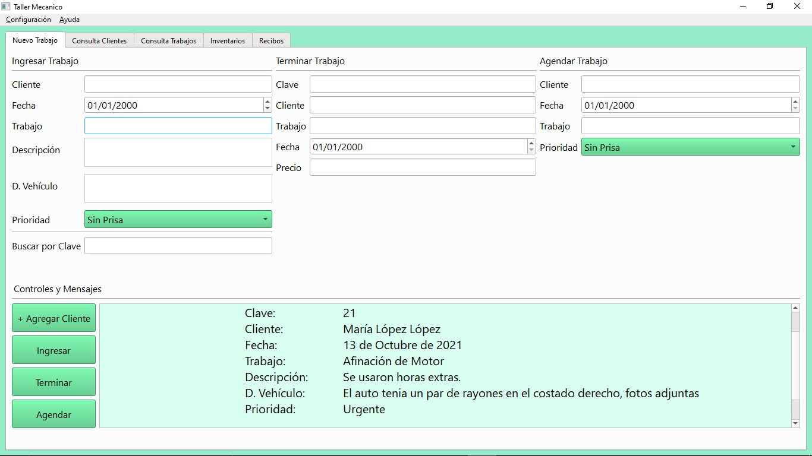
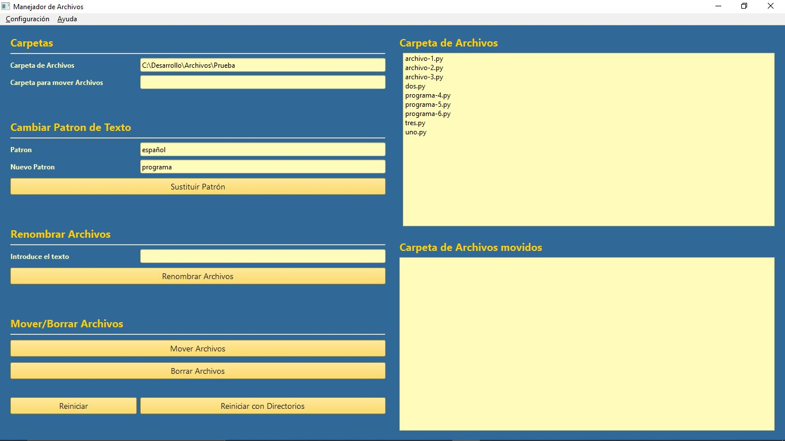

Aqui publicaré una lista de cada uno de mis nuevos proyectos, con una pequeña descripción.
Taller Mecánico

Este es un pequeño programa de escritorio, de código abierto, pensado
para que pequeños talleres mecánicos puedan llevar un registro básico de sus
clientes, trabajos, herramientas y refacciones.
Ver más...
Manejador de Archivos
Este es un proyecto pensado para las personas que deben renombrar y manejar
lista de archivos repetitivos.
Ver más...
